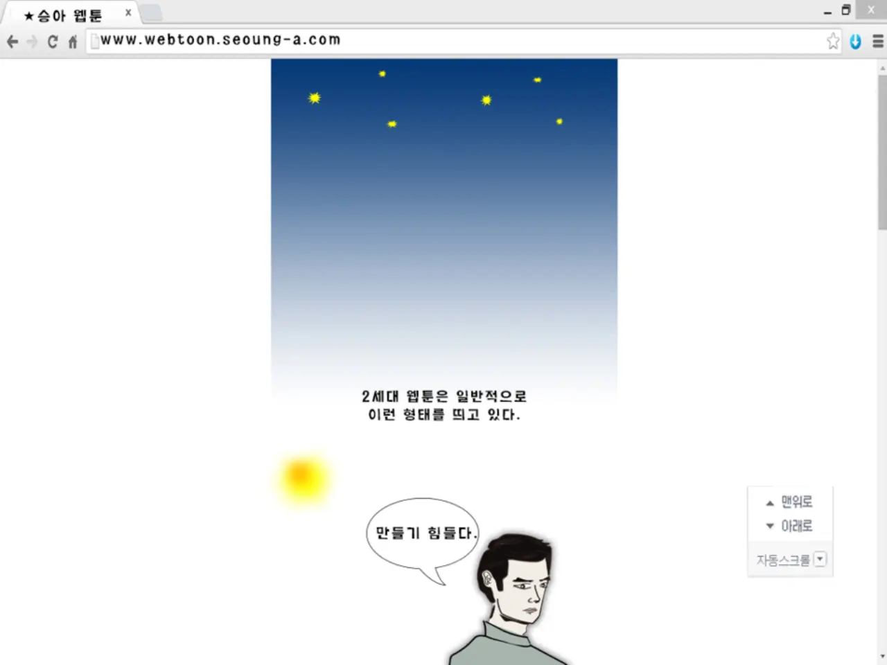

웹툰 시장에서 조회수는 여전히 중요합니다. 하지만 원작 경쟁의 중심은 점점 다른 곳으로 옮겨가고 있습니다. 플랫폼 안에서 많이 읽히는 작품을 넘어 드라마, 영화, 애니메이션, 게임, 굿즈, 해외 출판으로 확장될 수 있는지가 중요해졌습니다. 웹툰은 이제 연재 콘텐츠이면서 동시에 긴 수명을 가진 지식재산권의 출발점이 됩니다.
이 변화는 창작자와 플랫폼, 제작사 모두에게 다른 계산을 요구합니다. 단순히 인기 있는 작품을 빨리 사는 것만으로는 부족합니다. 캐릭터가 오래 기억되는지, 세계관이 다른 매체로 옮겨질 수 있는지, 각색할 때 핵심 갈등이 살아남는지, 해외 시장에서 문화적 맥락을 설명할 수 있는지 봐야 합니다. 조회수는 출발점이지만 판권 설계는 수익의 길을 정합니다.
읽힌 작품과 옮겨지는 작품

모든 인기 웹툰이 영상화에 맞는 것은 아닙니다. 세로 스크롤에서 강한 호흡이 드라마의 장면 구성과 다를 수 있고, 내면 독백이 많은 작품은 영상으로 옮길 때 힘을 잃을 수 있습니다. 반대로 조회수는 중간 정도여도 캐릭터 관계와 사건 구조가 뚜렷하면 다른 매체에서 더 큰 힘을 낼 수 있습니다. 원작 경쟁은 이제 조회수와 각색 가능성을 나누어 봐야 합니다.
특히 장르별로 필요한 조건이 다릅니다. 로맨스는 배우 캐스팅과 감정선이 중요하고, 판타지는 세계관 규칙과 제작비가 중요하며, 스릴러는 사건 밀도와 회차별 긴장이 중요합니다. 게임화는 캐릭터 성장과 전투 규칙, 수집 요소를 따집니다. 플랫폼이 원작을 평가할 때는 독자 반응뿐 아니라 어떤 매체로 확장할지까지 함께 봐야 합니다.
권리 계약이 흥행 뒤를 정합니다
웹툰 IP에서 가장 복잡한 부분은 권리입니다. 원작 연재권, 해외 번역권, 영상화권, 게임화권, 캐릭터 상품권, 오디오 드라마 권리, 2차 창작 관리가 서로 다를 수 있습니다. 초기에 계약을 단순하게 해 두면 작품이 커진 뒤 이해관계가 꼬일 수 있습니다. 흥행은 축제처럼 보이지만 계약이 흐릿하면 수익 배분과 의사결정에서 갈등이 생깁니다.
창작자에게도 권리 이해가 중요합니다. 플랫폼의 지원을 받는 대신 어떤 권리를 넘기는지, 각색 과정에서 원작자의 의견권이 있는지, 해외 판매 수익이 어떻게 정산되는지 확인해야 합니다. 제작사 역시 권리 범위가 분명해야 안심하고 투자할 수 있습니다. 원작 경쟁은 좋은 이야기를 찾는 일인 동시에 깨끗한 계약 구조를 찾는 일이 되었습니다.
글로벌 시장은 번역만으로 열리지 않습니다
웹툰이 해외로 나갈 때 번역은 첫 단계일 뿐입니다. 문화적 농담, 학교와 직장 문화, 가족 관계, 법과 제도, 음식과 지역감각이 독자에게 다르게 읽힐 수 있습니다. 어떤 작품은 한국적 맥락이 매력이 되지만, 어떤 작품은 설명이 부족하면 몰입을 방해합니다. 글로벌 판권을 보려면 언어보다 이해 가능한 갈등 구조를 봐야 합니다.
또한 국가별 플랫폼과 결제 습관도 다릅니다. 무료 회차를 어디까지 열지, 기다리면 무료 모델이 통하는지, 단행본 출판과 굿즈를 어떻게 묶을지, 현지 제작사와 어떤 방식으로 협업할지에 따라 수익 구조가 달라집니다. 웹툰 IP는 디지털 콘텐츠처럼 보이지만 실제로는 유통과 팬덤 운영의 사업입니다.
팬덤은 원작의 기억을 지킵니다
웹툰이 다른 매체로 옮겨질 때 팬덤은 가장 강한 지지자이자 가장 날카로운 감시자가 됩니다. 캐릭터 해석이 달라지거나 중요한 장면이 빠지면 팬덤은 빠르게 반응합니다. 제작사는 원작을 그대로 옮길 수는 없지만, 무엇을 바꾸고 무엇을 지켜야 하는지 분명히 알아야 합니다. 각색은 배신과 재창작 사이의 좁은 길을 걷습니다.
팬덤 운영은 상품 판매 이상의 의미를 가집니다. 작가 인터뷰, 제작 과정 공개, 캐스팅 설명, 원작 장면에 대한 존중이 작품의 수명을 늘립니다. 웹툰 IP는 완결 뒤에도 팬덤의 기억 안에서 계속 움직입니다. 플랫폼과 제작사는 그 기억을 단순 홍보 수단이 아니라 작품의 자산으로 다뤄야 합니다.
웹툰 원작 경쟁은 앞으로 더 치열해질 것입니다. 플랫폼은 인기작을 확보하려 하고, 제작사는 이미 팬덤이 있는 이야기를 원하며, 글로벌 서비스는 현지화 가능한 세계관을 찾습니다. 이때 조회수만 보면 중요한 것을 놓칠 수 있습니다. 각색 가능한 구조, 명확한 권리, 오래 가는 캐릭터, 해외 독자가 이해할 수 있는 갈등이 함께 있어야 합니다.
좋은 웹툰 IP는 한 번 많이 읽힌 작품이 아니라 여러 매체에서 다시 태어날 수 있는 작품입니다. 조회수는 문을 열어 주지만 2차 판권 설계가 길을 만듭니다. 창작자와 플랫폼, 제작사가 그 길을 처음부터 정교하게 닦을수록 웹툰은 짧은 연재의 성공을 넘어 긴 문화 자산으로 남을 수 있습니다.
플랫폼의 역할도 달라지고 있습니다. 예전에는 인기 작품을 많이 보유한 플랫폼이 유리했지만, 이제는 어떤 작품을 어느 시점에 영상사와 연결하고, 해외 배급사와 어떤 언어권부터 열어 갈지 설계하는 능력이 중요합니다. 조회수는 출발점이지만, 판권 계약과 제작 파트너 선정이 잘못되면 원작의 인기는 긴 수익으로 이어지지 못합니다.
작가와 제작사의 이해관계도 섬세하게 맞아야 합니다. 원작자는 캐릭터와 세계관이 훼손되지 않기를 원하고, 영상 제작사는 매체에 맞는 압축과 각색이 필요합니다. 굿즈나 게임으로 확장할 때는 캐릭터 사용 범위와 수익 배분이 더 복잡해집니다. 계약서가 느슨하면 작품이 성공한 뒤 오히려 갈등이 커질 수 있습니다.
독자 반응은 확장의 속도를 가늠하는 신호입니다. 댓글과 팬 커뮤니티에는 어떤 장면이 오래 기억되는지, 어떤 관계성이 팬덤을 움직이는지, 어떤 설정이 논란을 부르는지 드러납니다. 제작사는 단순히 인기 순위를 보는 데서 멈추지 않고 팬들이 반복해서 언급하는 감정의 지점을 읽어야 합니다. IP의 힘은 숫자와 함께 오래 남는 장면에서 만들어집니다.
해외 시장에서는 제목과 표지의 현지화도 작지 않은 변수입니다. 원작의 정서를 살리면서도 낯선 독자가 첫 회를 눌러 보게 만드는 번역과 디자인이 필요합니다. IP 사업은 작품성, 계약, 마케팅이 함께 맞아야 오래 갑니다.